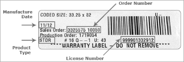
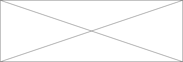

Warranty Information
Vinyl Windows
Vinyl Garden Windows
Vinyl Patio Doors
Acoustical Insulating Window System
Aluminium Storm Windows & Doors
Lifetime Solid Core Storm Doors
Majesty Wood Windows
Classic Vinyl Patio Rooms & Classic Vinyl Enclosure Systems
Paint (Harvey vinyl window & patio door surfaces or Therma-Tru door surfaces)
Where is my warranty label?
Select your product to see where the label can be found.
The warranty label is located in the window header under the top sash. To release the top sash, unlock the window and pull the top sash down.
How do I read my warranty label?
Donec nec justo eget felis facilisis fermentum. Aliquam porttitor mauris sit amet orci. Aenean dignissim pellentesque felis.
NEWER WINDOW LABELS
OLDER WINDOW LABELS
DOOR LABELS
Vinyl Windows Warranty
Harvey vinyl windows are manufactured from raw materials of the highest quality using the most up-to-date and modern production techniques. They are warranted for residential installations as follows.
LIFETIME WARRANTY
The extruded, solid vinyl members, screening and component mechanical parts, including locks, keepers, balances, and sash retainers are warranted against defects in material and workmanship for as long as the original purchaser owns and resides in the house in which they are installed.
TWENTY YEAR WARRANTY
Insulating glass is warranted against material obstruction of transparency resulting from film formation or dust collection on the interior surfaces for a period of twenty years.
TRANSFERABILITY
In the event the original purchaser sells the property in which the vinyl windows are installed, the coverage provided by this warranty will be limited to only the next subsequent owner and will be twenty (20) years from the date of manufacture.
EXCLUSIONS AND LIMITATIONS
The above warranty periods commence on the date of shipment from the manufacturing facility. This warranty does not cover broken glass; torn screening; damages resulting from improper installation; damages caused by airborne pollutants such as salt or acid rain; negligence or unreasonable use (including failure to provide reasonable and necessary maintenance); stress resulting from localized application of heat that causes excessive temperature differential over the glass surface or the edges of the unit; damage resulting from fire, lightning, windstorms, earthquakes, windborne objects, strain applied to the unit by movement of the building or inadequate provision for expansion or contraction of framing members; condensation on windows, which is a natural result of humidity within the house and the difference between the internal and exterior temperatures; installation in ships, vehicles, or outside the continental United States; seal failure if the seal has been subject to immersion in water; acts of God or other causes beyond the control of the manufacturer. Locking or non-locking screens will not stop a child from falling out a window. Screens are not intended to act as a human barrier. This warranty covers only manufacturing defects, is limited to repairing or replacing defective parts or components, and providing return transportation to the manufacturer’s nearest place of business, and does not include labor or other costs incurred in the removal, replacement, installation, or reinstallation of the product or any part or component of the product. Harvey Building Products reserves the right to discontinue or modify any of its products without notice and will not be liable under this limited warranty as a result of such discontinuance or modification and will have the right to substitute products which, in its sole discretion, are of equal value and quality. This warranty is intended to cover individual homeowners and does not apply to products purchased by or installed in commercial applications such as property owned by corporations, governmental agencies, partnerships, trusts, religious organizations, schools, or cooperative housing arrangements, or installed on apartment buildings or any other type of buildings or premises not used by individual homeowners as their residence. For such purchasers or entities to which this coverage does not apply, the warranty period will be (10) years following the date of original installation. This warranty applies to the following Harvey vinyl window products only: double hung, single hung, casement, awning, hopper, rolling, picture and designer shapes. Bay and bow configurations are also covered; however wood components are limited to a 10 year warranty. Acoustic vinyl windows are limited to a 10 year non-transferable warranty. This warranty does NOT apply to garden windows. The statements contained herein set forth the only express warranties of the above products. Any implied warranties imposed by law, such as implied warranties of merchantability or fitness for a particular purpose, are limited in time to the duration of the above express warranties. The manufacturer shall not be liable to the buyer for incidental or consequential damages for breach of any written or implied warranty. Some states do not allow limitations on how long an implied warranty lasts, and some states do not allow the exclusion or limitation of incidental or consequential damages, so the above limitations or exclusions may not apply to you. This warranty gives you specific legal rights, and you may have other rights which vary from state to state.
CLAIMS PROCEDURE
The product should first be inspected by the company that sold and installed the product to the homeowner within a reasonable time after discovery of a problem to determine if the problem is installation or product related.
To make a claim under this warranty for a product defect, either the contracting company or the homeowner should notify Harvey Building Products by calling our Field Service Dept at 1-800-822-0437, sending an email to fieldservice@harveybp.com, or filling out the online service form. The claim must identify:
- Company the product was purchased from
- Window type
- Installation date
- Serial number
- Description of the Defect
Product information can be found on your unit's warranty label.
Vinyl Garden Windows
Vinyl Patio Doors
Acoustical Insulating Window System
Aluminium Storm Windows & Doors
Lifetime Solid Core Storm Doors
Majesty Wood Windows
Classic Vinyl Patio Rooms & Classic Vinyl Enclosure Systems
Paint (Harvey vinyl window & patio door surfaces or Therma-Tru door surfaces)
Warranty Information
VINYL WINDOWS
Harvey vinyl windows are manufactured from raw materials of the highest quality using the most up-to-date and modern production techniques. They are warranted for residential installations as follows.
LIFETIME WARRANTY
The extruded, solid vinyl members, screening and component mechanical parts, including locks, keepers, balances, and sash retainers are warranted against defects in material and workmanship for as long as the original purchaser owns and resides in the house in which they are installed.
TWENTY YEAR WARRANTY
Insulating glass is warranted against material obstruction of transparency resulting from film formation or dust collection on the interior surfaces for a period of twenty years.
TRANSFERABILITY
In the event the original purchaser sells the property in which the vinyl windows are installed, the coverage provided by this warranty will be limited to only the next subsequent owner and will be twenty (20) years from the date of manufacture.
EXCLUSIONS AND LIMITATIONS
The above warranty periods commence on the date of shipment from the manufacturing facility. This warranty does not cover broken glass; torn screening; damages resulting from improper installation; damages caused by airborne pollutants such as salt or acid rain; negligence or unreasonable use (including failure to provide reasonable and necessary maintenance); stress resulting from localized application of heat that causes excessive temperature differential over the glass surface or the edges of the unit; damage resulting from fire, lightning, windstorms, earthquakes, windborne objects, strain applied to the unit by movement of the building or inadequate provision for expansion or contraction of framing members; condensation on windows, which is a natural result of humidity within the house and the difference between the internal and exterior temperatures; installation in ships, vehicles, or outside the continental United States; seal failure if the seal has been subject to immersion in water; acts of God or other causes beyond the control of the manufacturer. Locking or non-locking screens will not stop a child from falling out a window. Screens are not intended to act as a human barrier. This warranty covers only manufacturing defects, is limited to repairing or replacing defective parts or components, and providing return transportation to the manufacturer’s nearest place of business, and does not include labor or other costs incurred in the removal, replacement, installation, or reinstallation of the product or any part or component of the product. Harvey Building Products reserves the right to discontinue or modify any of its products without notice and will not be liable under this limited warranty as a result of such discontinuance or modification and will have the right to substitute products which, in its sole discretion, are of equal value and quality. This warranty is intended to cover individual homeowners and does not apply to products purchased by or installed in commercial applications such as property owned by corporations, governmental agencies, partnerships, trusts, religious organizations, schools, or cooperative housing arrangements, or installed on apartment buildings or any other type of buildings or premises not used by individual homeowners as their residence. For such purchasers or entities to which this coverage does not apply, the warranty period will be (10) years following the date of original installation. This warranty applies to the following Harvey vinyl window products only: double hung, single hung, casement, awning, hopper, rolling, picture and designer shapes. Bay and bow configurations are also covered; however wood components are limited to a 10 year warranty. Acoustic vinyl windows are limited to a 10 year non-transferable warranty. This warranty does NOT apply to garden windows. The statements contained herein set forth the only express warranties of the above products. Any implied warranties imposed by law, such as implied warranties of merchantability or fitness for a particular purpose, are limited in time to the duration of the above express warranties. The manufacturer shall not be liable to the buyer for incidental or consequential damages for breach of any written or implied warranty. Some states do not allow limitations on how long an implied warranty lasts, and some states do not allow the exclusion or limitation of incidental or consequential damages, so the above limitations or exclusions may not apply to you. This warranty gives you specific legal rights, and you may have other rights which vary from state to state.
CLAIMS PROCEDURE
The product should first be inspected by the company that sold and installed the product to the homeowner within a reasonable time after discovery of a problem to determine if the problem is installation or product related.
To make a claim under this warranty for a product defect, either the contracting company or the homeowner should notify Harvey Building Products by calling our Field Service Dept at 1-800-822-0437, sending an email to fieldservice@harveybp.com, or filling out the online service form. The claim must identify:
- Company the product was purchased from
- Window type
- Installation date
- Serial number
- Description of the Defect
Product information can be found on your unit's warranty label.
VINYL GARDEN WINDOWS
VINYL GARDEN WINDWOS
VINYL PATIO DOORS
VINYL PATIO DOORS
ACOUSTICAL INSULATING / WINDOW SYSTEM
ACOUSTICAL INSULATING / WINDOW SYSTEM
ALUMINIUM STORM WINDOWS & DOORS
ALUMINIUM STORM WINDOWS & DOORS
LIFETIME SOLID CORE STORM DOORS
LIFETIME SOLID CORE STORM DOORS
MAJESTY WOOD WINDOWS
MAJESTY WOOD WINDOWS
CLASSIC VINYL PATIO ROOMS & CLASSIC VINYL ENCLOSURE SYSTEMS
CLASSIC VINYL PATIO ROOMS & CLASSIC VINYL ENCLOSURE SYSTEMS
PAINT
(HARVEY VINYL WINDOW & PATIO DOOR SURFACES OR THERMA-TRU DOOR SURFACES)
PAINT
Where is my warranty label?
Select your product to see where the label can be found.
The warranty label is located in the window header under the top sash. To release the top sash, unlock the window and pull the top sash down.
How do I read my warranty label?
Donec nec justo eget felis facilisis fermentum. Aliquam porttitor mauris sit amet orci. Aenean dignissim pellentesque felis.
Newer Window Labels
Older Window Labels
Door Labels

Who are we
We may sell replacement windows, doors, and other quality building products, but that’s not what our customers are buying. They’re buying the peace of mind that comes from working with a company that stands behind every product, every day. So you aren’t just installing windows or siding or shingles. You’re installing confidence.
SEE THE WHOLE STORYWho are we
We may sell replacement windows, doors, and other quality building products, but that’s not what our customers are buying. They’re buying the peace of mind that comes from working with a company that stands behind every product, every day. So you aren’t just installing windows or siding or shingles. You’re installing confidence.
SEE THE WHOLE STORY
Who are we
We may sell replacement windows, doors, and other quality building products, but that’s not what our customers are buying. They’re buying the peace of mind that comes from working with a company that stands behind every product, every day. So you aren’t just installing windows or siding or shingles. You’re installing confidence.
SEE THE WHOLE STORY